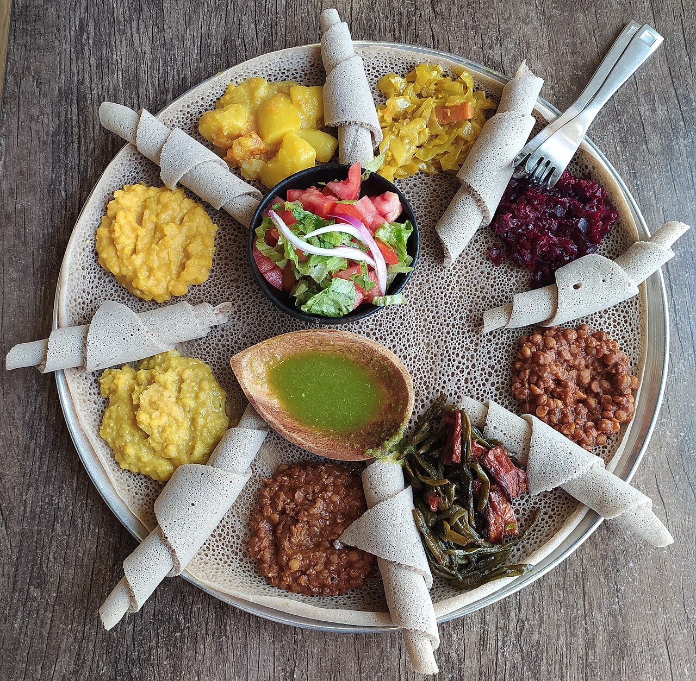
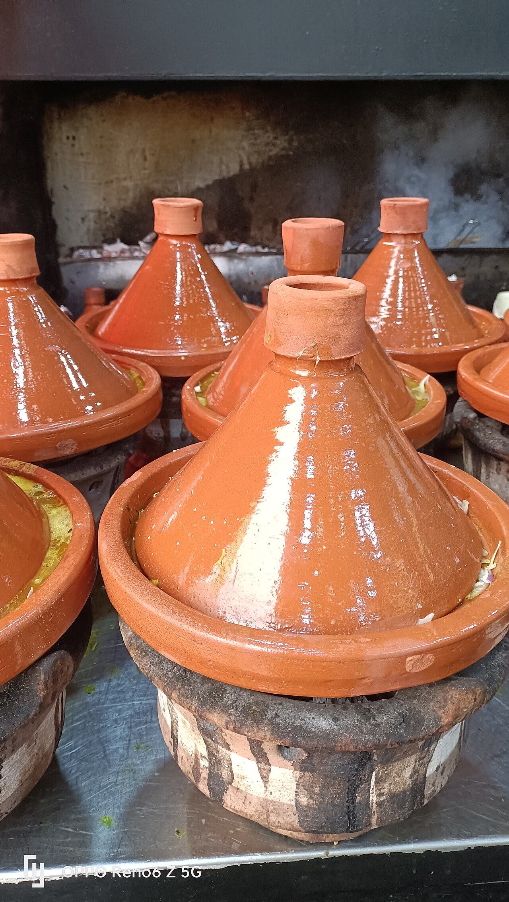
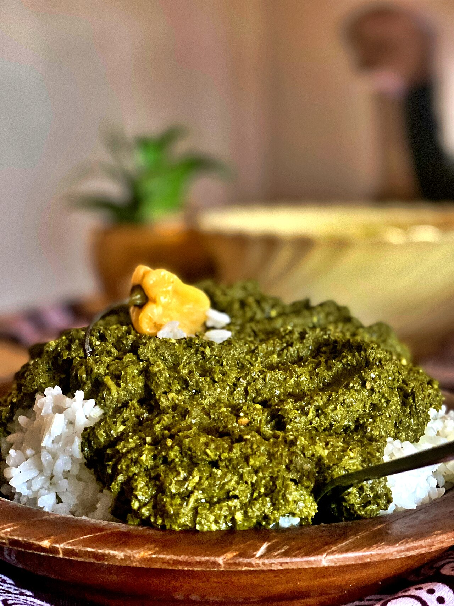
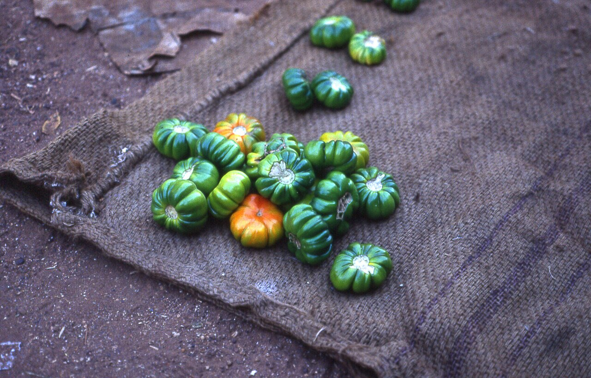
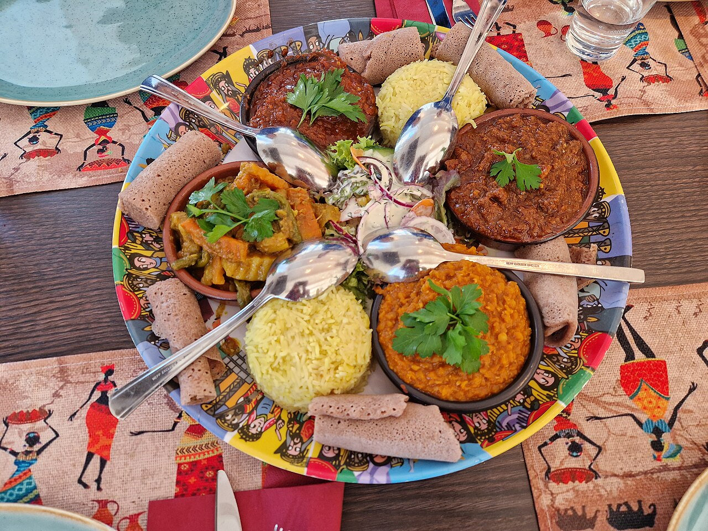
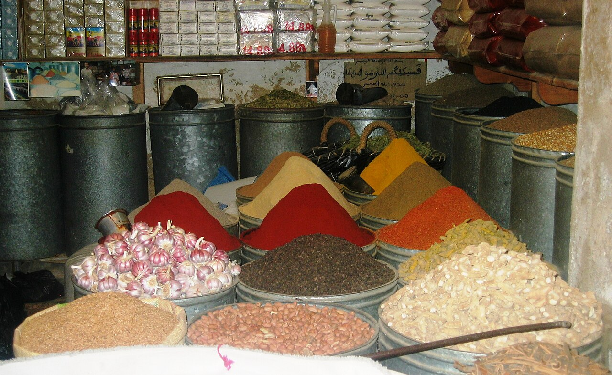

Jollof Rice
Rice cooked in a rich sauce of tomato, onion and scotch bonnet pepper. Nigeria and Ghana both claim the best version.
View recipeFrom smoky jollof rice to tangy injera, African food is built on bold spices, slow cooking and sharing. Start here, pick a dish and cook along.
Browse recipes Our story
Rice cooked in a rich sauce of tomato, onion and scotch bonnet pepper. Nigeria and Ghana both claim the best version.
View recipe
A soft, slightly sour flatbread made from fermented teff flour. It is the plate, the spoon and the meal in one.
View recipe
A slow-cooked stew named after its cone-shaped clay pot, flavoured with saffron, cumin and preserved lemon.
View recipe
A Rwandan favourite of pounded cassava leaves simmered with onion, eggplant and groundnut paste.
View recipe
Fiery stews, palm oil and one-pot rice dishes.
Explore West Africa
Fermented breads, leafy greens and the berbere spice blend.
Explore East Africa
Couscous, slow braising and fragrant spice mixes.
Explore North AfricaCooks around the world are discovering fonio, teff and sorghum, grains Africa has farmed for centuries.
Dishes built on cassava leaves, beans and groundnuts show how African kitchens have long cooked well without much meat.
Restaurants far from home now use suya spice, berbere and ras el hanout in everyday menus.